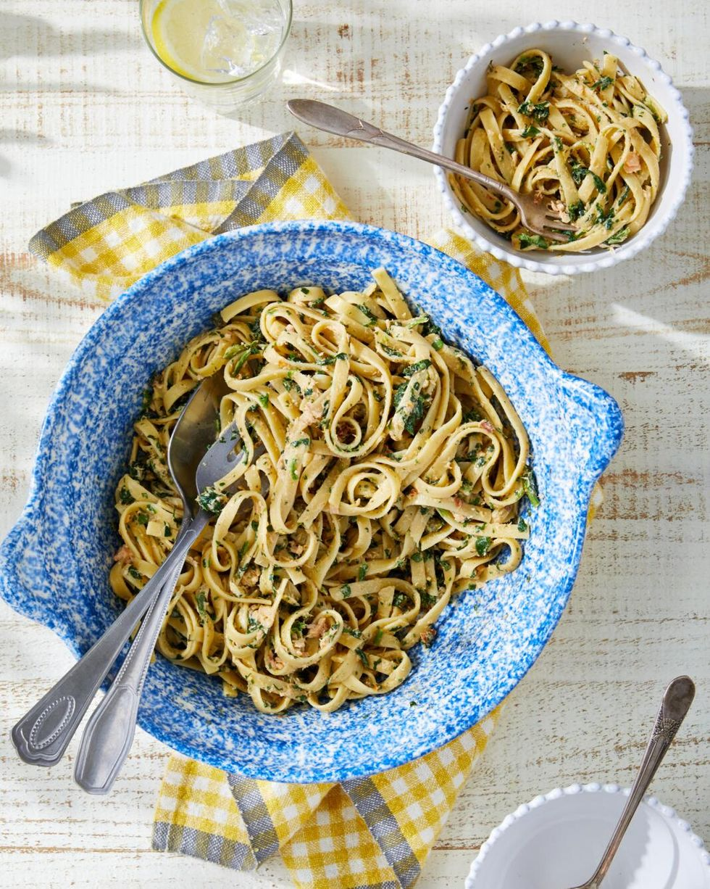

Salmon and Creamed Spinach Fettuccini

Ingredients
- Kosher salt and freshly ground black pepper
- 12 oz.fettuccini
- 1/3 c.heavy cream
- 1(4-ounce) can salmon, broken into chunks
- 2 tbsp.capers drained
- 1 tsp.lemon zest
- 1/3 c.chopped fresh flat-leaf parsley, plus more for garnish
- 2 tbsp.sun-dried tomatoes, chopped
Directions
- Step 1
Bring a large pot of salted water to a boil. Cook boil-in-bag creamed spinach according to package directions; remove bag to a plate.
Add fettuccini, and cook according to package directions. Drain, reserving 1 cup pasta water.
Step 2
Turn off stove and return pot to stovetop. Add creamed spinach (discard bag) and heavy cream and stir to combine. Add fettuccini and stir,
adding reserved pasta water 2 tablespoons at a time, if necessary, until spinach sauce fully coats pasta.
Step 3
Stir in salmon, capers, lemon zest, parsley, and sun-dried tomatoes.
Season with salt and pepper. Serve garnished with additional parsley.
Return